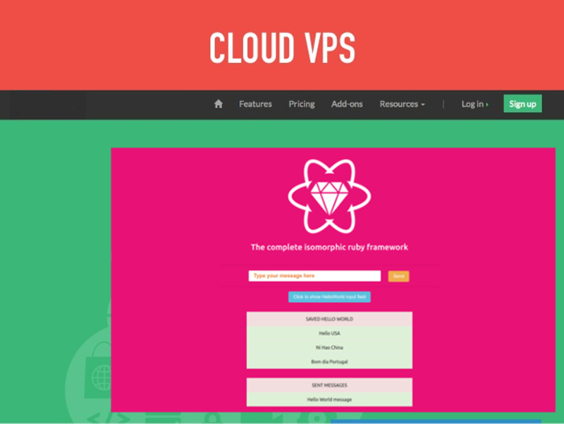

Deploying on VPS Tutorial

Step 1: Running your app in production
Before deploying your application onto your VPS, be sure having followed this tutorial:
Step 2: Deployment
Deploying instructions onto a VPS is really dependant with the OS and others used softwares.
In our tutorial we are going to suppose for example that your VPS is configured like that:
UBUNTU or other linux distrib, NGINX with passenger, RBENV, RAILS 5.1.2, RUBY 2.4.0 and GIT.
If you want a tutorial to install this kind of environment:
{ GoRails tutorial }
Step 2.1: Configuring Capistrano
We are going to deploy our application with Capistrano.
Update your Gemfile:
#Gemfile
gem 'capistrano'
gem 'capistrano-bundler'
gem 'capistrano-rails'
gem 'capistrano-rbenv', github: "capistrano/rbenv"
Then run:
bundle install
Initialize Capistrano configs files by running:
bundle exec cap install STAGES=production
Then we update the Capistrano config files:
#Capfile
require "capistrano/setup"
require "capistrano/deploy"
require "capistrano/scm/git"
install_plugin Capistrano::SCM::Git
require "capistrano/rbenv"
require "capistrano/bundler"
require "capistrano/rails"
set :rbenv_type, :user
set :rbenv_ruby, '2.4.0'
Dir.glob("lib/capistrano/tasks/*.rake").each { |r| import r }
#config/deploy.rb
lock "3.8.2"
set :application, "hyperloop-rails-helloworld"
set :repo_url, "ssh://git@vpsdomainname/home/git/hyperloop-rails-newhelloworld"
set :user, "vps_username"
set :deploy_to, "/home/#{fetch(:user)}/apps/#{fetch(:application)}"
set :linked_files, %w{config/database.yml config/secrets.yml}
set :linked_dirs, %w{bin log tmp/pids tmp/cache tmp/sockets vendor/bundle public/system backup}
set :keep_releases, 2
namespace :deploy do
desc 'Restart application'
task :restart do
on roles(:app), in: :sequence, wait: 5 do
execute :touch, release_path.join('tmp/restart.txt')
end
end
after :finishing, 'deploy:cleanup'
after :deploy, "deploy:restart"
end
#config/deploy/production.rb
set :stage, :production
# Replace 127.0.0.1 with your server's IP address!
server '127.0.0.1', user: 'vps_username', roles: %w{web app db}
Step 2.2: Pushing config files to the VPS
We are going to push all the previous changes to the VPS (A git repo must be configured on the VPS).
git add .
git commit -m "Deployment configs"
git push origin master
Step 2.3: Deploying for the first time
Before running the first deployment capistrano command, be sure to create a database for your application on your VPS. In production it is better to use MySQL or PostgreSQL.
For example, after being logged onto your VPS account with SSH, you can run these commands:
sudo -u postgres psql
CREATE USER vps_username WITH CREATEDB CREATEROLE PASSWORD 'password';
CREATE DATABASE hyperlooprailshelloworld owner vps_username;
And you also need to create a Rails secret production key:
bundle exec rake secret
Then copy secret key into config/secrets.yml.
Finally run the command:
bundle exec cap production deploy
You will see that the deployment will stop, saying that the database.yml is not existing. So we are going to copy this file onto the application VPS shared directory:
scp config/database.yml vps_username@vpsdomainname.com:/home/vps_username/apps/hyperloop-rails-helloworld/shared/config/
Be sure to update your database.yml file before:
#config/database.yml
production:
adapter: postgresql
encoding: unicode
database: hyperlooprailshelloworld
pool: 5
username: vps_username
password: databasepassword
And finally you also need to copy the secret.yml file onto your VPS:
scp config/secrets.yml vps_username@vpsdomainname.com:/home/vps_username/apps/hyperloop-rails-helloworld/shared/config/
Step 2.4: Deploying (finally)
Run this command again:
bundle exec cap production deploy
This time, everything should be deployed correctly.
And don't forget to configure your NGINX webserver correctly.
Below, there is an example of config file (/etc/nginx/sites-enabled):
server {
listen 80;
server_name hyperloop-rails-helloworld.vpsdomainname.com;
passenger_ruby /home/vps_username/.rbenv/versions/2.4.0/bin/ruby;
passenger_enabled on;
rails_env production;
root /home/vps_username/apps/hyperloop-rails-helloworld/current/public;
}
Step 2.5: Testing
Go to http://hyperloop-rails-helloworld.vpsdomainname.com and enjoy !
The best way to get help and contribute is to join our Gitter Chat